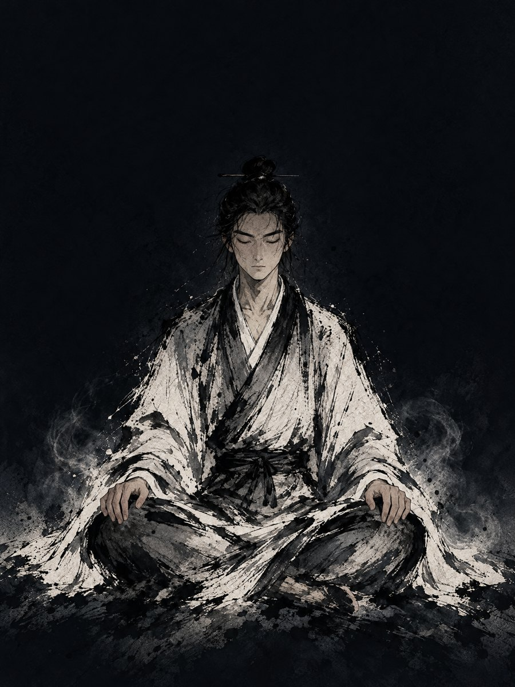
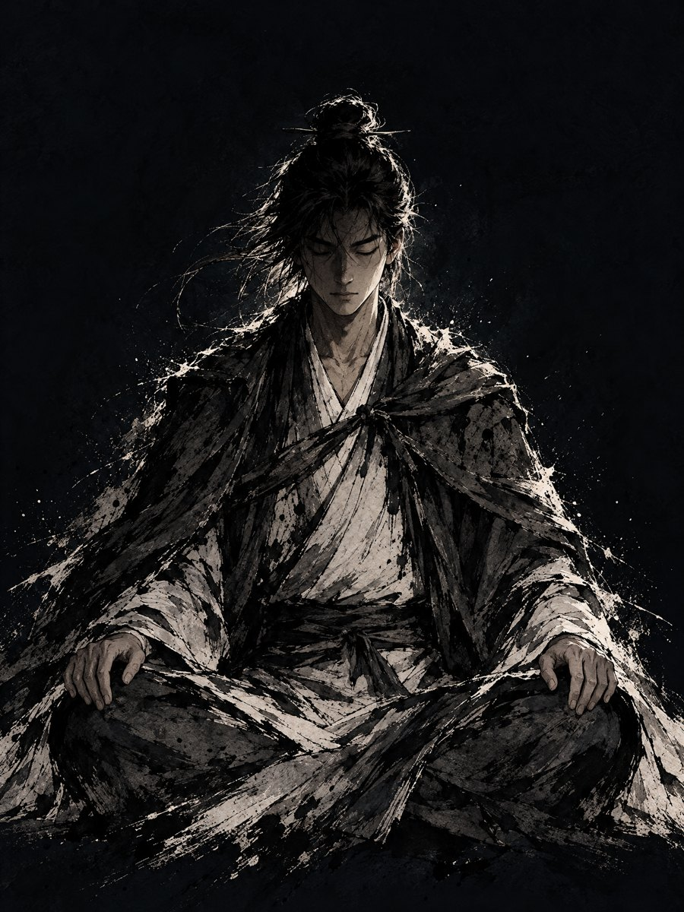
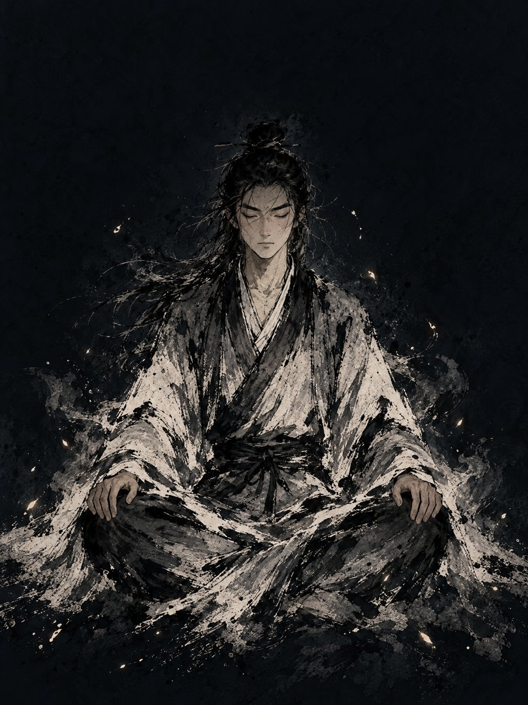
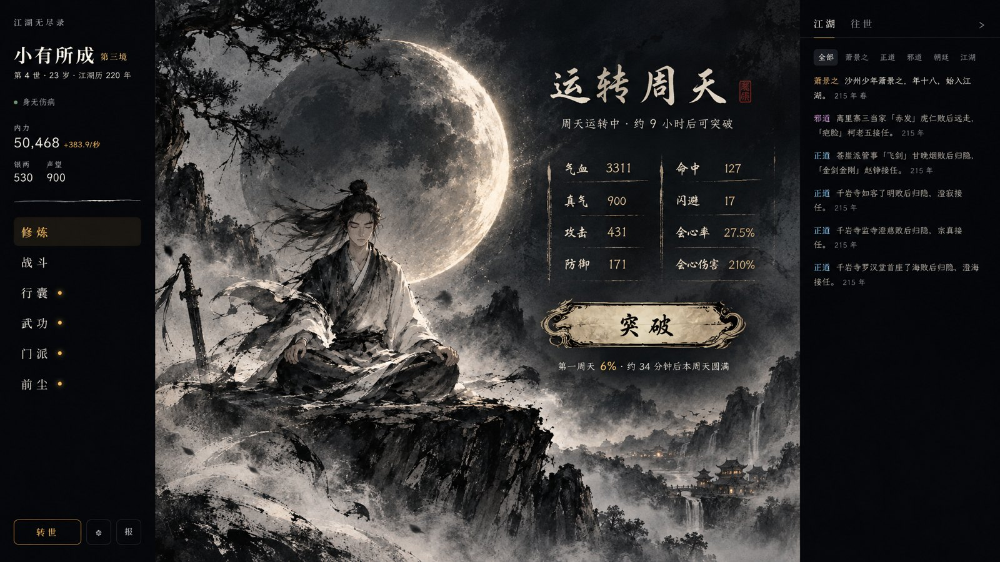
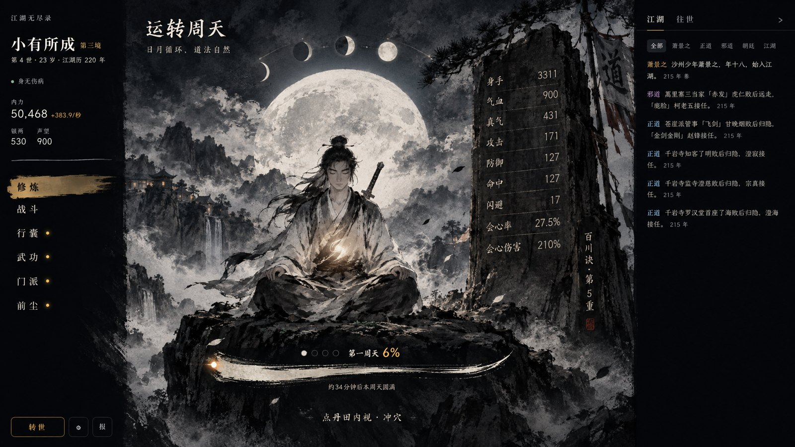
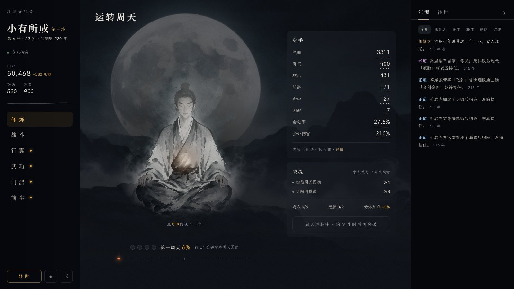

修炼页 · 方向挑选
一、打坐立绘（替换现有人像）

甲 · 白袍，最接近现有人像，笔触粗化

乙 · 披风逆光，最像对阵区斗笠侠客的苍劲

丙 · 散发、衣摆化墨，周身真气火星
二、整页概念（AI 概念图，画中文字与数字不准，只看构图）

A · 题跋式 · 月亮本身亏盈＝本段周天；身手两列淡墨直接写在画上，细墨线分隔；卷轴按钮

B · 石碑式 · 身手刻在崖上石碑；头顶一串月相＝几段周天；笔触进度线；丹田透光
对照：现状

左图右表、两张圆角卡、进度两头跑